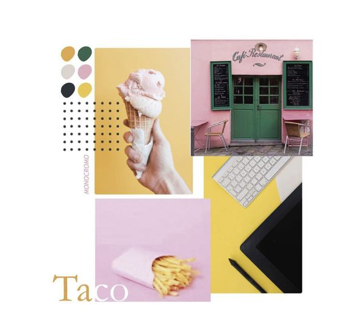

Son representaciones visuales de objetos, personas, lugares o ideas. Pueden ser fotografías, dibujos, ilustraciones o gráficos.
Función: Atraer la atención, ilustrar conceptos, crear atmósferas, comunicar ideas de forma visual.
Ejemplos: Una imagen de producto en una tienda online, un diagrama explicativo en una presentación, un fondo decorativo en una aplicación.
